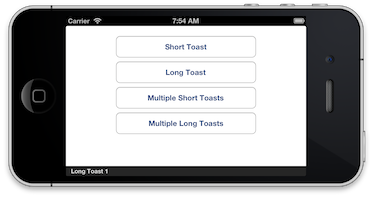
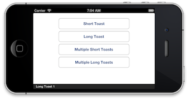

RGToast
RGToast provides a toast through the UI for users to see a temporary message shown on the screen.
RGToast

RGToast provides a toast through the UI for users to see a temporary message shown on the screen. Inspiration for RGToast is taken from both Matthias Tretter's MTStatusBarOverlay and Android's Toast mechanism.
RGToast currently only shows a toast as an overlay at the bottom of the screen.
 

My plans are to add different styles of toasts in a future version.
Add RGToast to Project
Use CocoaPods to add RGToast to your Podfile:
pod 'RGToast', '1.0.0'
Usage
Add RGToast to your ViewController:
#import "RGToast.h"
This call will show a toast with a short duration.
[[RGToast makeToast:@"Toast!"] show];
To get a bit more granular, make this call:
[[RGToast makeToast:@"Long Toast!" duration:RGToastViewDurationLong] show];
That's it!
Sample App
I have also written and provided a sample app called RGToastSample that shows you how to use the app.
Docs
Creator
License
RGToast is available under the MIT license. See the LICENSE file for more info.